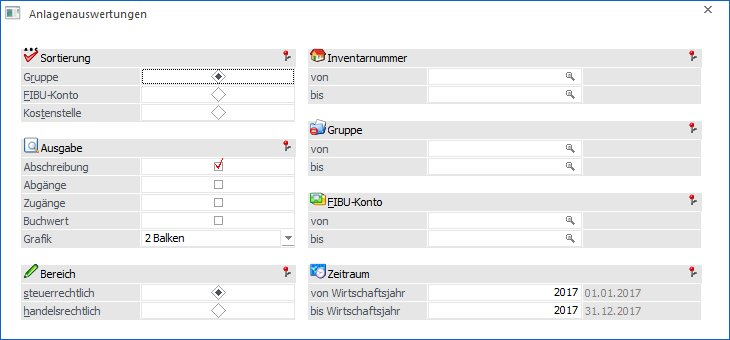
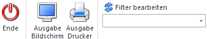
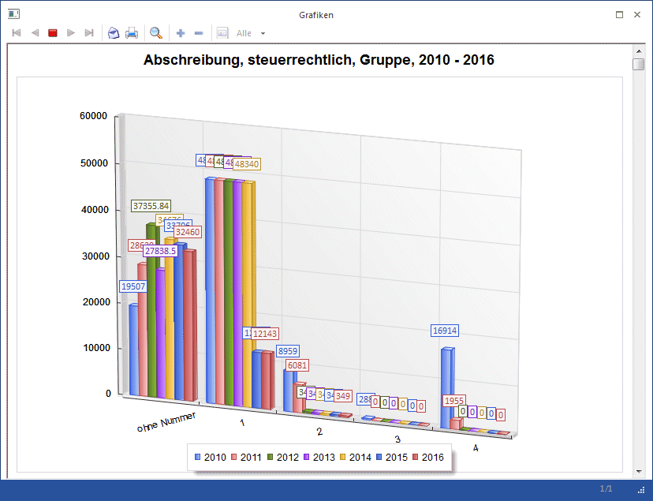
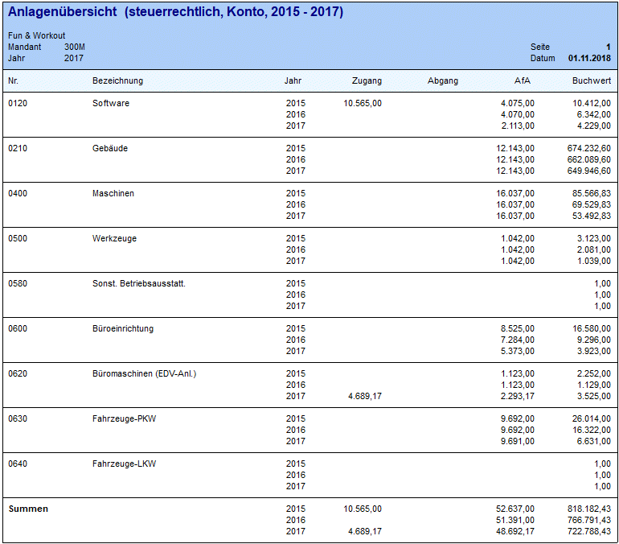

Mit den Anlagenauswertungen können Sie eine jahresübergreifende graphische Auswertung und eine Anlagenübersicht Ihrer Anlagegüter ausgeben.
Dazu gehen Sie in den Menüpunkt
1 Auswertungen
1 Anlagen-Auswertungen

Auswertekriterien
Ø Sortierung
Hier kann entschieden werden, ob die Wirtschaftsgüter nach ihrer Anlagengruppe, dem FIBU-Konto oder der Kostenstelle gruppiert und summiert werden sollen.
Ø Ausgabe
Sie können wählen, welche Werte verglichen werden sollen.
ü Abschreibung
ü Abgänge
ü Zugänge
ü Buchwert
Nachaktivierungen werden im Bereich der Zugänge mit ausgewiesen.
Ø Grafik
Mit dieser Auswahllistbox kann die Darstellungsform gewählt werden.
ü 0 - Keine Grafik
ü 2 - Balken
ü 3 - Linien
Ø Bereich
Hier kann entschieden werden, ob die steuerrechtlichen oder handelsrechtlichen Werte ausgegeben werden sollen.
Automatisch vorgeschlagen wird das Abschreibungsverfahren, welches im ANBU-Parameter / Buchen für die Buchungsübergabe definiert ist.
Ø Inventarnummer von – bis
Eingrenzung auf eine bzw. mehreren Inventarnummern, dabei steht der Matchcode auch zur Verfügung.
Ø Gruppe von - bis
Auswahl einer Gruppe. Im Matchcode werden alle Anlagengruppen angezeigt. Die Auswertung berücksichtigt die entsprechende Eingrenzung.
Ø FIBU-Konto von - bis
Auswahl eines FIBU-Kontos. Im Matchcode werden alle FIBU-Konten angezeigt. Die Auswertung berücksichtigt die entsprechende Eingrenzung.
Ø Zeitraum
Sie können einen Zeitraum von bis zu 10 Jahren auswerten. Die Auswertung ist auch in die Zukunft möglich - z.B.: von 2011 bis 2021.
Buttons

Ø Ende
Das Fenster wird geschlossen, ohne dass eine Auswertung angezeigt wird.
Ø Ausgabe Bildschirm
Standardmäßig wird die Ausgabe auf dem Bildschirm vorgeschlagen, die auch durch Drücken der F5-Taste gestartet werden kann.
Ø Ausgabe Drucker
Die Auswertung wird am Drucker ausgegeben.
Ø Filter bearbeiten
Wird der Filter-Button angeklickt, kann ein neuer Filter definiert oder ein bestehender Filter gewählt werden. Dort kann eingestellt werden, nach welchen frei definierbaren Kriterien die Selektion durchgeführt werden soll (Details entnehmen Sie dem Kapitel Filter - Assistent).
Wurden in diesem Fenster bereits Filter angelegt, kann aus der Auswahllistbox ein bestehender Filter gewählt werden. Es werden immer nur die Filter angezeigt, die für das gerade aktive Fenster angelegt wurden.
Es öffnen sich 2 Fenster: eine grafische Auswertung und eine Anlagenübersicht.

